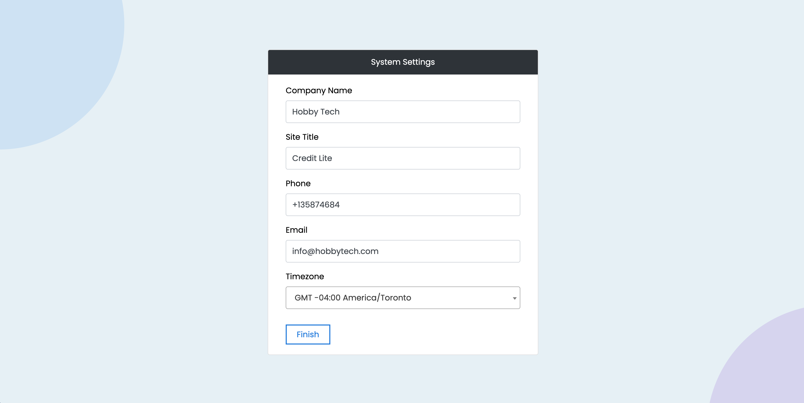

About Credit Lite SaaS
Credit Lite SaaS is a powerful and fully-featured online credit solution designed for finance, banking, and co-operative organizations. As a SaaS-based platform, it enables businesses to offer financial services to multiple clients (tenants) from a single system, making it ideal for co-operatives, microfinance institutions, and loan service providers.
This system provides all the essential tools to efficiently manage loans, repayments, and other financial operations while supporting multiple account types, including savings accounts, checking accounts, and customizable account options for each customer.
This system supports multiple account types, including savings accounts, checking accounts, and customizable account options for individual customers. Additionally, Credit Lite integrates with 7 popular online payment gateways, such as PayPal, Stripe, Razorpay, PayStack, Flutterwave, CoinPayments (Crypto), InstaMojo, and Mollie, enabling instant automated deposits into customer account
With no coding required, Credit Lite is easy to install using the built-in one-click auto installer. Additionally, the language management tool allows effortless translation into multiple languages without modifying any code.
Core Features
- Subscription Based System
- Multiple Account Types
- Multiple Currency
- Multiple Branches
- Subscription Plans
- Tenant Management
- Instant Deposit Via Online Gateways
- Deposit Money
- Withdarw Money
- Custom Transaction Category
- Loan Products
- Loan Management
- Savings Accounts
- Chequing Accounts
- Dynamic Deposit Methods
- Dynamic Withdrawal Methods
- Bank Accounts
- Bank Transactions
- Internal Messaging
- Interest Calculation
- Auto Account Maintenance Fee deduction
- PayPal Payment Gateway
- Stripe Payment Gateway
- CoinPayments(Crypto) Integrated
- Razorpay Payment Gateway
- Paystack Payment Gateway
- Flutterwave Payment Gateway
- Instamojo Payment Gateway
- Mollie Payment Gateway
- Member Management
- Members KYC Documents
- Member's Portal
- Support Tickets
- SMS Notifications
- Email Notifications
- Local Notifications
- GOOGLE RECAPTCHA V3
- Expense Categories
- Expense Management
- Account Statement
- Account Balance Report
- Loan Due Report
- Transaction Report
- Cash In Hand Report
- Revenue Report
- Database Backup
- System User Management
- Dynamic Role Management
- Role Based Access Control
- Website Management
- Blogs
- Custom Pages
- Ton of Other Features
Server Requirements
You can run this script on any server like Linux, Windows or Uinix Server. But you need to meet some server requirements for installing and running this script.
This System built with Laravel 12.X that's why you must meet the following server requirements:
- PHP >= 8.2
- Ctype PHP Extension
- cURL PHP Extension
- DOM PHP Extension
- Fileinfo PHP Extension
- Filter PHP Extension
- Hash PHP Extension
- Mbstring PHP Extension
- OpenSSL PHP Extension
- PCRE PHP Extension
- PDO PHP Extension
- Session PHP Extension
- Tokenizer PHP Extension
- XML PHP Extension
Live Server installation
Step 1
You can install this script on main domain or sub domian and sub directory. You need to create your sub domain or sub directory if you don't want to install this script on your main domain.
Step 2
In this step you need to create a MySQL database as well as databse username and password and give all privileges to database user like as bellow.

Step 3
Create Database User
Step 4
In this stage you need to make sure that your database user has all privileges like as bellow.
Step 5
In this step you need to extract your downloaded zip file locally on your PC. You will get a file called credit-lite-saas-source.zip after extracting the zip file. After that you need to access your File Manager from cPanel by clicking File Manager and upload credit-lite-saas-source.zip file into your domain/subdomain directory and extract all files.

Step 6
Extract all files
Step 7
In this step you need to put your domain/subdomain/sub directory url into your browser and installer will run automatically like bellow:
Step 8
Click Next and put correct database details in this step.
Step 9
Click Next and put super admin login details in this step.

Step 10
Click Next and enter some system settings information in this step.

Step 11
Click Finish button. After that you need to login admin account.
System Configuration
General Settings
After login to super admin account you need to setup all settings like General Settings, Email configuration, System settings, currency, logo, favicon etc.
Currency Settings
You can set your currency and also you can modify currency format for showing amount.
Email Settings
This is very important settings. You need to set SMTP details for enabling email features like as email notification, forget password, etc.
Logo & Favicon
You can change you logo and favicon from this page.
Cache Control
This system used cache for better performance. Some cases you may need to remove cache so you can use that screen for cleaning cache data.
Subscription Plans
You can manage default subscription plans from the sidebar menu Subscription Plans > All Plans. You can also create new plan from the sidebar menu Subscription Plans > Add New.
Online Payment Gateways
You can configure online payment gateways from the Sidebar menu Online Gateways.
Offline Payment Gateways
You can create offline payment method like cash payment, bank transfer or cheque, etc. You can create and manage offline methods from the sidebar menu Offline Gatweways.
Localhost Installation
There are few common ways to run a laravel project on your localhost. We are showing two common methods in bellow.
Using XAMPP or WAMP
You can install XAMPP or WAMP on your local machine and run your Laravel project on a local server. To do this, you need to move your Laravel project to the "htdocs" or "www" folder of XAMPP or WAMP and then start the Apache server as well as MySQL server. After that extract the downloaded zip file and move spike_office_source to xampp\htdocs folder. Now open browser and enter http://localhost/spike_office and installer will run automatically
Using Valet for MAC
Valet is a local development environment for Mac users that allows you to run Laravel projects without using the PHP artisan serve command. To use Valet, you need to install it on your Mac and then create a symbolic link to your Laravel project in the "Sites" folder.
This application needs a database, check out DBngin, which provides a free, all-in-one database management tool that includes MySQL, PostgreSQL, and Redis. After DBngin has been installed, you can connect to your database at 127.0.0.1 using the root username and an empty string for the password.
After that extract the downloaded zip file and move spike_office_source to Sites folder. Now open browser and enter http://spike_office_source.test and installer will run automatically
For more details about valet you can read Laravel Valet Docs
Common Steps
When you run the url to your browser then the following steps are common for all methods.
Step 4
Click Next and put correct database details in this step.
Step 5
Click Next and put super admin login details in this step.
Step 6
Click Next and enter some system settings information in this step.
Step 7
Click Finish button. After that you need to login admin account.
Tenants Creation
Tenants can be added in two ways within the system:
1. Super Admin Control
The Super Admin can add, edit, and manage tenants from the Admin Panel. The Tenants menu is conveniently located in the sidebar menu for easy access.
2. Self-Service Tenant Sign-Up
Tenants can register themselves through the system’s sign-up process, allowing for a seamless onboarding experience without requiring Super Admin intervention.
Tenants Settings
Each tenant can manage their own settings through the System Settings menu in the Tenant Panel. This allows tenants to customize their configurations, ensuring the system aligns with their specific needs and preferences.
Member Portal
The Tenant Panel supports three types of logins:
1. Admin(Tenant) Login
The main tenant (admin) has full access to the system, enabling them to manage users, configure settings, oversee financial operations, and control all aspects of the platform.
2. Role-Based User Login
Staff members log in based on assigned roles, granting them access to specific features and functionalities as defined by their permissions.
3. Member Login
A separate Member Portal is available for all members, providing access to member-specific features.
Models
Model file are located under app directory and also app/Models directory

Controllers
All Controller file are located under app/Http/Controllers
Views
All Views files are located under resources/views directory